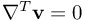
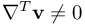
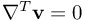
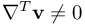
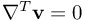
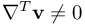

Simulate with complex geometries and complex physics
tut3d_01
TUTORIAL 1: flow in a simple tube
Goals of this Unit:
 Figure 7: sketch of simulation
The first example is a simple channel flow. At the inlet on the left hand side we assume a constant velocity. There is no velocity at the walls ( no-slip boundary condition at the bottom, top, back and front wall). Further there is no gravity present and the pressure at the outlet on the right hand side is zero.
Boundary conditions are defined in the following way at USER_common_variable.dat:
In the Alias Section
we have to define all parts of the geometry as read-in in the boundary element section.
The next picture exhibits the generation time of each particle after a certain number of simulation cycles have been completed.
Figure 7: sketch of simulation
The first example is a simple channel flow. At the inlet on the left hand side we assume a constant velocity. There is no velocity at the walls ( no-slip boundary condition at the bottom, top, back and front wall). Further there is no gravity present and the pressure at the outlet on the right hand side is zero.
Boundary conditions are defined in the following way at USER_common_variable.dat:
In the Alias Section
we have to define all parts of the geometry as read-in in the boundary element section.
The next picture exhibits the generation time of each particle after a certain number of simulation cycles have been completed.
 Figure 9: particle generation time after some simulation cycles elapsed
The computation was done using the Lagrange method which we have specified by writing the LAGRANGE flag in the first line
of “USER_common_variables.dat”. In this example the particles move with the fluid velocity. On the contrary the Euler method (specified by using the keyword EULERIMPL instead of LAGRANGE) leaves the particle cloud fixed. In general the Euler method works fine for stationary flows whereas the Lagrange method is more suitable for transient problems. The difference between these two methods can be seen by watching the animation in ParaView with the “Points of Surface” representation turned on (this shows the particles).
The option flags “IMPLICIT” and “vp-” specify the penalty scheme for the implicit formulation, see vp- . The coupling of the simultaneous computation of velocity and pressure is controlled by the COEFF_dt_virt value in “common_variables.dat”. COEFF_dt_virt represents the factor A in the scheme for the virtual time step size . The highest coupling is given for COEFF_dt_virt=0.0, because then we explicitly demand , however the linear solver might not converge for such strong request. For values of COEFF_dt_virt bigger than zero, we penalize values of  with a certain pressure. Higher values indicate less coupling (penalizing), which can be necessary if the linear solver does not converge well. COEFF_dt_virt=0.1 is usually a good choice, already leading to very satisfactory results with invisible com
For Reynolds numbers of order 0.1 or greater we can also use the Chorins reprojection scheme. The corresponding flag is “v--”, see v-- . However the scheme v-- becomes unstable if COEFF_dt_virt is chosen too small, so in case of unstable results, this value should be increased.
The Reynolds number for this problem is in the order of magnitude of 1. Consequently the computation works fine with both methods.
Suggestions for exploring FPM:
Figure 9: particle generation time after some simulation cycles elapsed
The computation was done using the Lagrange method which we have specified by writing the LAGRANGE flag in the first line
of “USER_common_variables.dat”. In this example the particles move with the fluid velocity. On the contrary the Euler method (specified by using the keyword EULERIMPL instead of LAGRANGE) leaves the particle cloud fixed. In general the Euler method works fine for stationary flows whereas the Lagrange method is more suitable for transient problems. The difference between these two methods can be seen by watching the animation in ParaView with the “Points of Surface” representation turned on (this shows the particles).
The option flags “IMPLICIT” and “vp-” specify the penalty scheme for the implicit formulation, see vp- . The coupling of the simultaneous computation of velocity and pressure is controlled by the COEFF_dt_virt value in “common_variables.dat”. COEFF_dt_virt represents the factor A in the scheme for the virtual time step size . The highest coupling is given for COEFF_dt_virt=0.0, because then we explicitly demand , however the linear solver might not converge for such strong request. For values of COEFF_dt_virt bigger than zero, we penalize values of  with a certain pressure. Higher values indicate less coupling (penalizing), which can be necessary if the linear solver does not converge well. COEFF_dt_virt=0.1 is usually a good choice, already leading to very satisfactory results with invisible com
For Reynolds numbers of order 0.1 or greater we can also use the Chorins reprojection scheme. The corresponding flag is “v--”, see v-- . However the scheme v-- becomes unstable if COEFF_dt_virt is chosen too small, so in case of unstable results, this value should be increased.
The Reynolds number for this problem is in the order of magnitude of 1. Consequently the computation works fine with both methods.
Suggestions for exploring FPM:
- Setting up of a flow problem “simple channel flow”
- The most important parameters in the file common_variables.dat
- The parameters v--, vp- and COEFF_dt_virt
- How to define boundaries and aliases in 3D examples
Figure 7: sketch of simulation
The first example is a simple channel flow. At the inlet on the left hand side we assume a constant velocity. There is no velocity at the walls ( no-slip boundary condition at the bottom, top, back and front wall). Further there is no gravity present and the pressure at the outlet on the right hand side is zero.
Boundary conditions are defined in the following way at USER_common_variable.dat:
BC_T($wall$) = (%BND_ROBIN%, 10.0, 500.0, 0.3) # BC_T($xyz$) = (%BND_CAUCHY%, alpha, T0, inertialThickness), i.e. CAUCHY: lambda*dT/dn = alpha*(T-T0)
BC_T($in$) = (%BND_DIRICH%, 1500.0) # BC_T($xyz$) = (%BND_DIRICH%, T0 ) , i.e. fix the temperature at the boundary to a value of T0
BC_T($out$) = (%BND_ROBIN%, 0.0, 500.0) # Cauchy condition, see above. This condition mimics a pure insulatoin boundary
BC_T($wallt$) = (%BND_ROBIN%, 10.0, 500.0, 0.3) # Cauchy condition, see above
BC_p($wall$) = ( %BND_wall% ) # standard wall pressure condition
BC_p($in$) = ( %BND_wall% ) # for pressure BC, inflow and wall boundaries behave in the same way
BC_p($out$) = ( %BND_DIRICH%, 0.0 ) # fix the pressure to be 0 at the outlfow boundary
BC_p($wallt$) = ( %BND_wall% ) # standard wall pressure condition
BC_v($wall$) = ( %BND_wall_nosl% ) # standard noslip condition at lower wall
BC_v($in$) = ( %BND_inflow%, [&v0&], 0, 0 ) # inflow velocity prescribed
BC_v($out$) = ( %BND_NEUMANN%, 0,0,0 ) # standard Neumann condition at the outflow (i.e. keep the velocity free, but fix dv/dn=0)
BC_v($wallt$) = ( %BND_wall_nosl% ) #( %BND_slip% ) # classical noslip conditions
BCON($wall$, %ind_p_dyn%) = ( %BND_wall% ) # standard wall pressure condition
BCON($in$, %ind_p_dyn%) = ( %BND_AVERAGE% ) # for pressure BC, inflow and wall boundaries behave in the same way
BCON($out$, %ind_p_dyn%) = ( %BND_DIRICH%, 0.0 ) # fix the pressure to be 0 at the outlfow boundary
BCON($wallt$, %ind_p_dyn%) = ( %BND_wall% ) # standard wall pressure condition
begin_alias{"BoundaryElements"}
"bottom" = " BC$wall$ ACTIVE$init_always$ IDENT%BND_wall_nosl% MAT$MatUSER$ TOUCH%TOUCH_always% MOVE$NO_MOVE$ CHAMBER1 " #
"in" = " BC$in$ ACTIVE$init_always$ IDENT%BND_inflow% MAT$MatUSER$ TOUCH%TOUCH_always% MOVE$NO_MOVE$ CHAMBER1 POSTPROCESS$PP_IN$ " #
"out" = " BC$out$ ACTIVE$init_always$ IDENT%BND_outflow% MAT$MatUSER$ TOUCH%TOUCH_always% MOVE$NO_MOVE$ CHAMBER1 POSTPROCESS$PP_OUT$ " #
"top" = " BC$wallt$ ACTIVE$init_always$ IDENT%BND_wall_nosl% MAT$MatUSER$ TOUCH%TOUCH_always% MOVE$NO_MOVE$ CHAMBER1 " #
"front" = " REV_ORIENT BC$wallt$ ACTIVE$init_always$ IDENT%BND_wall_nosl% MAT$MatUSER$ TOUCH%TOUCH_always% MOVE$NO_MOVE$ CHAMBER1 " #
"back" = " BC$wallt$ ACTIVE$init_always$ IDENT%BND_wall_nosl% MAT$MatUSER$ TOUCH%TOUCH_always% MOVE$NO_MOVE$ CHAMBER1 " #
"dummyPoint"= " ACTIVE$init_always$ MOVE$NO_MOVE$ CHAMBER1 SMOOTH_LENGTH$P_0$ " #
"dummyPoint2"= " ACTIVE$init_always$ MOVE$NO_MOVE$ CHAMBER1 SMOOTH_LENGTH$P_0$ " #
end_alias
Figure 9: particle generation time after some simulation cycles elapsed
The computation was done using the Lagrange method which we have specified by writing the LAGRANGE flag in the first line
of “USER_common_variables.dat”. In this example the particles move with the fluid velocity. On the contrary the Euler method (specified by using the keyword EULERIMPL instead of LAGRANGE) leaves the particle cloud fixed. In general the Euler method works fine for stationary flows whereas the Lagrange method is more suitable for transient problems. The difference between these two methods can be seen by watching the animation in ParaView with the “Points of Surface” representation turned on (this shows the particles).
The option flags “IMPLICIT” and “vp-” specify the penalty scheme for the implicit formulation, see vp- . The coupling of the simultaneous computation of velocity and pressure is controlled by the COEFF_dt_virt value in “common_variables.dat”. COEFF_dt_virt represents the factor A in the scheme for the virtual time step size . The highest coupling is given for COEFF_dt_virt=0.0, because then we explicitly demand , however the linear solver might not converge for such strong request. For values of COEFF_dt_virt bigger than zero, we penalize values of  with a certain pressure. Higher values indicate less coupling (penalizing), which can be necessary if the linear solver does not converge well. COEFF_dt_virt=0.1 is usually a good choice, already leading to very satisfactory results with invisible com
For Reynolds numbers of order 0.1 or greater we can also use the Chorins reprojection scheme. The corresponding flag is “v--”, see v-- . However the scheme v-- becomes unstable if COEFF_dt_virt is chosen too small, so in case of unstable results, this value should be increased.
The Reynolds number for this problem is in the order of magnitude of 1. Consequently the computation works fine with both methods.
Suggestions for exploring FPM:
- play around with the smoothing length (SMOOTH_LENGTH) -> use more or fewer MESHFREE points
- check vp- and v--
- especially check v-- for smaller and smaller Re-numbers (increase eta)
- in the boundary elements section, try to make the tube longer by scaling it, for example, in the x-direction
| List of members: | |
|---|---|
| Y_piece | flow in a Y-piece |
| USER_common_variables | TUTORIAL 1: flow in a simple tube: USER_common_variables.dat |
| common_variables | TUTORIAL 1: flow in a simple tube: common_variables.dat |